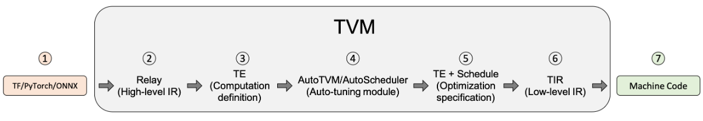

TVM源码学习-00
本文最后更新于：2023年11月22日 下午
TVM v0.8 源码学习
代码拉取
1 | |
编译安装
编译常识
GCC
对于小项目来说，文件数量较少，使用GCC直接进行编译即可
- g++:将源文件编译成.out可执行文件
- g++ -c:将源文件编译成中间文件 而不进行链接，即编译成.o文件
- g++ -o:将源文件或者.o文件进行编译+链接或链接，生成.out文件
- 对于包含多个源文件的项目，可以将源文件分别gcc -c，再将产生的文件链接到一起，如
g++ -o myprogram file1.o file2.o
make & makefile
然而随着计算机的发展，一个软件工程包含的源文件越来越多，手动逐个编译完全不可行，于是有个make和makefile。
Make 是一个批处理工具，它根据 Makefile 文件中的规则来构建项目。Make 可以确定哪些文件需要重新编译，哪些文件已经是最新的，从而只编译需要编译的文件。
Makefile：Makefile 是 Make 的配置文件，它包含了一系列的规则，用于指定如何构建项目。Make 通过读取 Makefile 文件来构建项目。
在这一阶段，工程师可以手写项目的makefile文件，再使用make指令统一构建整个项目
Cmake & CMakeLists
makefile在一些简单的工程下，完全可以人工手写，但是问题又来了，工程非常大的时候，连 makefile 的手写也非常麻烦，这时就需要一个工具可以自动生成 makefile ，这个工具就是cmake。
CMakeLists 是 Cmake 的配置文件。还是需要手写。
Cmake 会根据 CMakeLists 自动生成项目的 makefile 文件，然后再使用 make 构建项目。
Cmake 有不同的生成器，可以生成不同平台下的 makefile 文件，比如 Unix Makefile、Visual Studio、Ninja、Nmake等等，可以生成不同平台下的makefile，生成后再进行make就可以将项目构建在不同的平台下。
ninja是一种注重速度的生成器，使用ninja生成会产生一个build.ninja文件，然后使用ninja而非make进行构建
编译TVM
首先在 https://winlibs.com/ 拿到带 LLVM 库的 GCC 包，安装并加入环境变量，在cmd中可以使用 llvm-config --libdir 验证
创建build目录并cp cmake/config.cmake build并自定义配置，把USE LLVM打开
Conda创建tvm的虚拟环境，可以直接 conda env create --file conda/build-environment.yaml 但是使用该环境 git 会莫名奇妙出bug，不如手动创环境下载该文件中提到的依赖包
安装visual studio，把桌面C++开发组件勾上，安装完成后在cmd中使用cl验证（有没有可能除了装一个vs上述步骤全部不需要，但是不管了，官方文档安装部分相当混乱）
1 | |
安装python包
在import tvm时如果未找到包，vscode会自动在工作区下创建配置帮你把tvm的路径加到 python.analysis.extraPaths 但实测虽然变绿且鼠标可以左键跳转了，但解释器还是找不到，可能需要改全局的python路径啥的
不如直接安装，环境变量引入包的好处在于源码更改后，引入可以立即感知；而install的包在每次源码更改后要重新install才能生效。但是我使用的v0.8的源码，已经没有更新了，所以直接安装也ok
1 | |
用户手册
tvm/gallery
introduction.py

TVM编译步骤：
-
从 TensorFlow、PyTorch 或 ONNX 等框架导入模型。在导入阶段中，TVM 可以从其他框架（如 TensorFlow、PyTorch 或 ONNX）中提取模型。 TVM 为前端提供的支持水平会随着我们不断改进这个开源项目而变化。如果在将模型导入 TVM 时遇到问题，可以将其转换为 ONNX。
-
翻译成 TVM 的高级模型语言 Relay。已导入 TVM 的模型在 Relay 中表示。Relay 是神经网络的功能语言和中间表示（IR）。Relay 应用图级优化 pass 来优化模型。
-
降级为张量表达式（TE）表示。降级是指将较高级的表示转换为较低级的表示。应用了高级优化之后，Relay 通过运行 FuseOps pass，把模型划分为许多小的子图，并将子图降级为 TE 表示。张量表达式（TE）是一种用于描述张量计算的领域特定语言。 TE 还提供了几个 schedule 原语来指定底层循环优化，例如循环切分、矢量化、并行化、循环展开和融合。为将 Relay 表示转换为 TE 表示，TVM 包含了一个张量算子清单（TOPI），其中包含常用张量算子的预定义模板（例如，conv2d、transpose）。
-
使用 auto-tuning 模块 AutoTVM 或 AutoScheduler 搜索最佳 schedule。schedule 为 TE 中定义的算子或子图指定底层循环优化。auto-tuning 模块搜索最佳 schedule，并将其与 cost model 和设备上的测量值进行比较。TVM 中有两个 auto-tuning 模块，AutoTVM（有模板）和Ansor（无模板）。
-
为模型编译选择最佳配置。调优后，auto-tuning 模块会生成 JSON 格式的调优记录。此步骤为每个子图选择最佳 schedule。
-
降级为张量中间表示（TIR，TVM 的底层中间表示）。基于调优步骤选择最佳配置后，所有 TE 子图降级为 TIR 并通过底层优化 pass 进行优化。接下来，优化的 TIR 降级为硬件平台的目标编译器。这是生成可部署到生产的优化模型的最终代码生成阶段。
-
编译成机器码。compiler-specific 的生成代码最终可降级为机器码。 TVM 可将模型编译为可链接对象模块，然后轻量级 TVM runtime 可以用 C 语言的 API 来动态加载模型，也可以为 Python 和 Rust 等其他语言提供入口点。或将 runtime 和模型放在同一个 package 里时，TVM 可以对其构建捆绑部署。